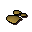

Unicorn horn
| Config name | unicorn_horn |
| Item id | 237 |
| Value | 20 gp |
| Weight | 7g |
| Members | Yes |
| Tradeable | Yes |
| Stackable | No |
| Defined in | scripts/skill_herblore/configs/grinding/grindables.obj |
Unicorn horn
This horn has restorative properties.
Used to make
| Skill | Level | XP | Ingredients | Tool | How | Where | Makes |
|---|---|---|---|---|---|---|---|
| Herblore | 1 | use on item |  Unicorn horn dustmembers; grind |
Dropped by
| NPC | Level | Quantity | Rarity | Via | Notes |
|---|---|---|---|---|---|
| 15 | 1 | Always | |||
| 27 | 1 | Always |
Referenced in scripts
scripts/_test/scripts/cheats/cheat_bank.rs2scripts/drop tables/scripts/unicorn.rs2scripts/skill_herblore/scripts/grinding/grind_ingredient.rs2